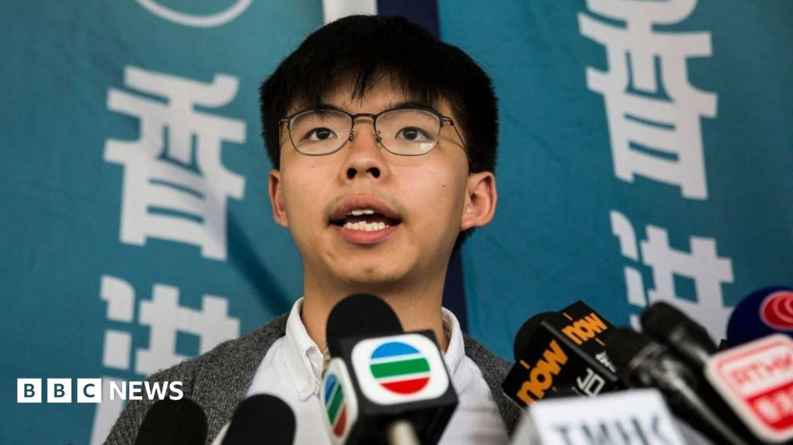

World · 05 Nov 2026
Joshua Wong, face of Hong Kong's pro-democracy protests, jailed for 10 years

Wong, 30, is among hundreds of Hongkongers detained under the controversial national security law.
Multiple independent publishers are reporting on the same development: Joshua Wong, face of Hong Kong's pro-democracy protests, jailed for 10 years.
The available reports place the development in the World category. The accounts were compared for agreement on the central event rather than simply shared names or broad topics.
One of the available reports describes the development this way: Wong, 30, is among hundreds of Hongkongers detained under the controversial national security law.
Readers should consult the linked source reports for additional context, updates and details that may change as the story develops.
Sources
This article was produced by the C. O. Eric AI Newsroom from the cited sources. It is published only after automated evidence and safety checks.